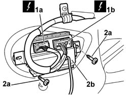

7005M40 FRONT ELECTRIC WINDOW SYSTEM ECU - R+R FOLLOWING ELECTRICAL WIRING CHECK
- Path
- Procedures > 70 FITTINGS > 7005 PASSENGER COMPARTMENT FRONT SIDE DOORS > 7005M FRONT ELECTRIC WINDOWS > 7005M40 FRONT ELECTRIC WINDOW SYSTEM ECU - R+R FOLLOWING ELECTRICAL WIRING CHECK
- Kind
- repair procedure (removal / refitting; the operation number is the code)
- Applies to
- all engines; all production periods
- Interactive page
- https://sloeber94.github.io/elrnDB-aGt/en/#/125001796
Applies to: all engines; all production periods
 Removing
Removing
 Refitting
RefittingOp. 7005E12 CORNER COVER OF ONE FRONT SIDE DOOR, LH OR RH R R
Op. 7005C44 INTERIOR HANDLE PANEL - R R
(for driver's door)
Op. 7005M12 PASSENGER SIDE FRONT DOOR ELECTRICALLY OPERATED WINDOW SWITCH - R R
(for passenger door)
Op. 7005E08 FRONT SIDE DOOR INTERIOR PANEL R R
1. Disconnect the electrical connections (1a) and (1b) for the window opening control unit.
Name | Connector | |
|---|---|---|
1a | Driver's electric window control unit | See M116A DRIVER'S ELECTRIC WINDOW CONTROL UNIT ( CONNECTORS ) |
Name | Connector | |
|---|---|---|
1b | Driver's electric window control unit | See M116B DRIVER'S ELECTRIC WINDOW CONTROL UNIT ( CONNECTORS ) |
Name | Connector | |
|---|---|---|
1a | Passenger side electric window control unit | See M117A PASSENGER SIDE ELECTRIC WINDOW CONTROL UNIT ( CONNECTORS ) |
Name | Connector | |
|---|---|---|
1b | Passenger side electric window control unit | See M117B PASSENGER SIDE ELECTRIC WINDOW CONTROL UNIT ( CONNECTORS ) |
2. Undo the fixing bolts (2a) and remove the window opening control unit (2b).

Applies to: all engines; all production periods
Refitting
RemovingCheck that the window opening control unit is not damaged.
Position the window opening control unit and secure it using the fixing bolts.
Connect the electrical connections .
Name | Connector | |
|---|---|---|
- | Driver's electric window control unit | See M116A DRIVER'S ELECTRIC WINDOW CONTROL UNIT ( CONNECTORS ) |
Name | Connector | |
|---|---|---|
- | Driver's electric window control unit | See M116B DRIVER'S ELECTRIC WINDOW CONTROL UNIT ( CONNECTORS ) |
Name | Connector | |
|---|---|---|
- | Passenger side electric window control unit | See M117A PASSENGER SIDE ELECTRIC WINDOW CONTROL UNIT ( CONNECTORS ) |
Name | Connector | |
|---|---|---|
- | Passenger side electric window control unit | See M117B PASSENGER SIDE ELECTRIC WINDOW CONTROL UNIT ( CONNECTORS ) |
Op. 7005E08 FRONT SIDE DOOR INTERIOR PANEL R R
Op. 7005M12 PASSENGER SIDE FRONT DOOR ELECTRICALLY OPERATED WINDOW SWITCH - R R
(for passenger door)
(for driver's door)
Op. 7005C44 INTERIOR HANDLE PANEL - R R
Op. 7005E12 CORNER COVER OF ONE FRONT SIDE DOOR, LH OR RH R R
Programme the end of travel for the window opening control unit following the instructions given below.
Get inside the vehicle and close the door.
Turn the ignition ON and, using the switch for the electric window involved, place the window in the 'fully lowered' position and keep the switch pressed for 10 seconds.
Still using the switch, place the window in the 'fully raised' position and keep the same switch pressed for 10 seconds.
The window offset for the up and down function is programmed in the control unit starting from the 'fully raised' position memorized previously.
Topics linked from this page (5)
- 7005C44 INTERIOR HANDLE PANEL - R R
- 7005E08 FRONT SIDE DOOR INTERIOR PANEL R R
- 7005E12 CORNER COVER OF ONE FRONT SIDE DOOR, LH OR RH R R
- 7005M12 PASSENGER SIDE FRONT DOOR ELECTRICALLY OPERATED WINDOW SWITCH - R R
- 7005M14 SWITCH UNIT CONTROLLING ELECTRIC WINDOWS REAR VIEW MIRRORS AND DOOR LOCK ON DRIVERS SIDE FRONT DOOR R R
Topics that link to this page (29)
- M01 ELECTRIC FRONT WINDOWS / NOT WORKING
- M03 ONE OF THE ELECTRIC FRONT WINDOWS IS NOT WORKING
- INTRODUCTION - MAINTENANCE
- INTRODUCTION - DIAGNOSTICS
- INTRODUCTION - ENGINE
- INTRODUCTION - AXLE
- INTRODUCTION - BRAKES
- INTRODUCTION - STEERING
- INTRODUCTION - SUSPENSION AND WHEELS
- INTRODUCTION - AUXILIARY UNITS
- 5505B11 FRONT DOOR WIRING - R R
- INTRODUCTION - FITTINGS
- INTRODUCTION - PASSENGER COMPARTMENT FRONT SIDE DOORS
- 7005A04 FRONT SIDE DOOR WATER GUARD PROTECTION - R R OR REPLACE WITH DOOR PANEL REMOVED
- 7005A14 FRONT SIDE DOOR - ADJUST CENTERING AND MOULDING - INCLUDES ADAPTATION OF HINGES AND SEALS ON DOOR COMPARTMENT
- 7005C10 FRONT DOOR OUTER HANDLE - R R WITH DOOR PANEL REMOVED
- 7005C11 FRONT SIDE DOOR OUTSIDE HANDLE R R
- 7005C42 FRONT SIDE DOOR BARREL/LOCK CONNECTING LINKAGE - R R WITH DOOR PANEL REMOVED
- 7005C43 LINK CONNECTING FRONT SIDE DOOR BARRELS/CATCH - R+R
- 7005C54 FRONT SIDE DOOR INTERNAL OPENING RETURN MECHANISM (WITH HANDLE) - R R FOR REPAIR OR REPLACE WITH DIFFERENT VERSION
- 7005C55 FRONT SIDE DOOR INTERIOR OPENING RETURN DEVICE (WITH HANDLE) - R+R FOR REPAIR OR REPLACEMENT
- 7005D14 FRONT SIDE DOOR DESCENDING WINDOW GLASS - R R WITH DOOR PANEL (AND MOUNT FRAME) REMOVED
- 7005E91 PARTITION ON ONE FRONT DOOR (LH OR RH) - R R WITH DOOR PANEL REMOVED
- 7005M20 FRONT SIDE DOOR ELECTRIC WINDOW SYSTEM - R R WITH DOOR PANEL/SUPPORT FRAME REMOVED
- 7005M21 FRONT SIDE DOOR ELECTRICALLY OPERATED WINDOW - R R
- 7005N20 FRONT SIDE DOOR LOCK MOTOR/CATCH ASSEMBLY - RR WITH DOOR PANEL AND SUPPORT FRAME REMOVED
- 7005N21 FRONT SIDE DOOR LOCK MOTOR-LOCK ASSEMBLEY-R R
- INTRODUCTION - PANELS AND FRAME
- 7205E36 STRIPPING FRONT SIDE DOOR